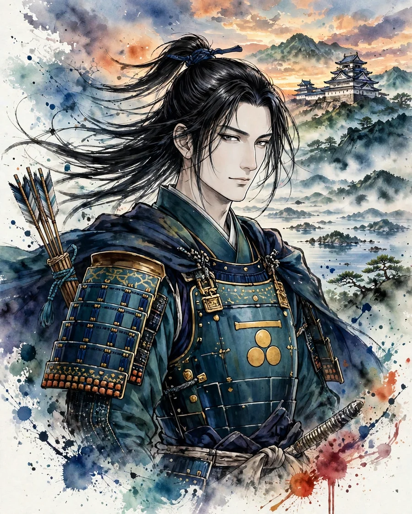

Mori Motonari
毛利元就 (もうり もとなり)

| Years | 1497–1571 |
|---|---|
| House | Mori clan |
| Region | Chugoku |
| Era | Sengoku period |
Overview
Born into the family of a minor local lord (kokujin) of Aki, he expanded his power in the space between the Amago and Ouchi clans. At the Battle of Itsukushima he defeated Sue Harukata and in time became a Sengoku daimyo who controlled most of the Chugoku region. He is known for the lesson he gave to his three sons.
Life
He was born as a son of Mori Hiromoto, lord of Yoshida-Koriyama Castle in Aki. The headship of the house passed through his elder brother's line before Motonari inherited it, and while maneuvering skillfully between the Amago and Ouchi clans he expanded his power in Aki. At the Battle of Yoshida-Koriyama Castle in 1540 he repelled an attack by the Amago army, and at the Battle of Itsukushima in 1555 he defeated Sue Harukata's great army by a surprise attack. Thereafter he advanced in pursuit of the former Ouchi territories and expanded his domain to Suo, Nagato, Iwami, and Izumo. Destroying the Amago clan, he became a daimyo controlling most of the Chugoku region. In his later years he devoted his attention to relations with the Otomo and Oda clans, and died at Yoshida-Koriyama Castle in 1571.
In battle
Motonari's generalship was characterized by stratagem and information warfare. He placed importance on a way of advancing in which he induced internal divisions on the enemy's side and increased his allies before fighting. At the Battle of Itsukushima he read the island's terrain and the weather, used castle construction to draw the enemy out, and adopted the bold plan of a sudden attack on their headquarters. Hence his being praised in parallel in the saying, 'In stratagem, Motonari; in arms, Shingen.'
Arms and equipment
More than Motonari's own martial skill, the organization of his retainer band and his navy was the source of his strength. His coordination with the Murakami navy was the key to holding command of the sea in the Seto Inland Sea. The anecdote of the three arrows, in which he preached unity to his three sons Takamoto, Motoharu, and Takakage, is famous as a lesson, but historically it derives from tales of the Edo period; the 'three arrows' in fact correspond to real, individual letters he addressed to his three sons (the Sanshi Kyokunjo, 'Letters of Instruction to My Three Sons').
Character and records
In Motonari's letters there remains much careful attention to the management of his domain and to his children, and a figure emerges that cannot be captured by the image of a schemer alone. The words 'Hyakuman Isshin' ('a million hearts as one') are also a tradition attributed to Motonari. He kept his health into old age, and the skill with which he left his house standing as the hegemon of the Chugoku region is outstanding even among Sengoku daimyo.
In literature
mori1, taikoki, kunidori
Mori Motonari is an epic series with Motonari as its protagonist. The protagonist of Shinsho Taikoki is Hideyoshi, but Hideyoshi's Chugoku campaign and the struggle with the Mori house form a major climax, and the Mori house of the generations of Motonari's sons and grandsons is also depicted. Kunidori Monogatari is the story of another seizure of a province, unfolding in Mino and Owari at the same time as Motonari's.
Castles connected with Mori Motonari
Recommended books on the age of the warlords
Castle History
Japanese Castles 1540–1640
Author: Stephen Turnbull
The great castles of Japan's warring-states era: how the strongholds of the daimyo were built, defended and attacked, explained by the leading English-language historian of samurai warfare, with illustrations throughout.
View at Pickwick BookshopCheck the price at Pickwick Bookshop
Castle History
Japanese Castles AD 250–1540
Author: Stephen Turnbull
The earlier half of the story: from the first fortifications of ancient Japan through the rise of the first true castles, again by Stephen Turnbull. Read it before the 1540–1640 volume to cover the whole arc.
View at Barnes & NobleCheck the price at Barnes & Noble
Castle Guide
Samurai Castles: History / Architecture / Visitors' Guides
Hundreds of color photographs and close-up detail on Japan's most important surviving samurai castles — their history, design and military features, with guidance for visitors. The best single companion for castle sightseeing.
View at Barnes & NobleCheck the price at Barnes & Noble
Book links on this page go to the retailers' product pages. Prices and availability are shown on the retailer's page.